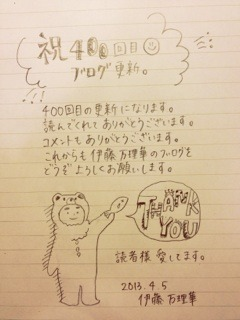
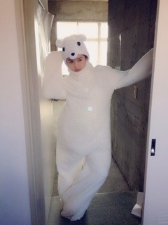

| 2013/04 05 Fri | 400回目*marika |
＼祝／

**********
 好きなタピオカの味はー？
好きなタピオカの味はー？
 ブラックタピオカに紅芋ミルク♪
まりっかってあだ名変わったの？
ブラックタピオカに紅芋ミルク♪
まりっかってあだ名変わったの？
前はまりっかじゃなくて、
どんなあだ名だったの？
初期はあだ名が
「べびたん」でした。
でも...これはもう黒歴史です...←
今はまりっかだよ！
学校に行くときは髪型は
どうしてますか？
通学鞄はデコったりしてますか？
後ろでぴっちり結んでます。
鞄にデコる...？！
ストラップ一個です。
なんか地味ですみません

自撮りってどーやったら
上手くできるの？
練習...
激おこぷんぷん丸って
分かりますか？
わからん。ポップだね！
本当に怒ってるん
 ？
？
？
友達の家に泊まったりしたとき
夜遅くまで起きていられる方？
そりゃ、お泊まり会は
テンション上がるでしょう！
楽しいでしょう！ガールズトーク！
一人暮らしでとても寂しい俺に
万理華から一言ください！
いないいないばー
ブログ読んで元気になって！ね？
私の手料理届けにいくよ
 ←
←
←
DDだけどまりっ会入ってもいい？
コメントでもあったのですが
下北FMでDD嫌いとか言って
ショックを受けてる方が...><
私も流れで言ってしまったので
全く本心ではないのです。
大蔵さんをからかったのです。
ごめんなさい><
だからDDでも大歓迎
私もDDです。みんなかわいいもん

なぜモロッコに行きたいん？
モロッコ料理と、雑貨！すき！
今、スマホの待ち受けは
どんなやつにしてる？
苔。
昨日同じく400回目の更新を迎えた
深川さんに何か一言お願いします。
まいまーい
まいまいまいまいまいまいまいまい
一緒に買い物行きたいーなー♪
好きな数字は？
2
単純に誕生日が2月20日だから。
**********
明日はいよいよ
「アオーレ1周年誕生祭」！
ライブに公開生放送

楽しみ楽しみ楽しみ楽しみ
新潟のみなさん！
待ってろよ！！

先輩を美白に加工したのは内緒。でへ
では明日も頑張りまりっか
 ！！
！！
！！
まりか
コメント(508)
2013/04/05 22:30